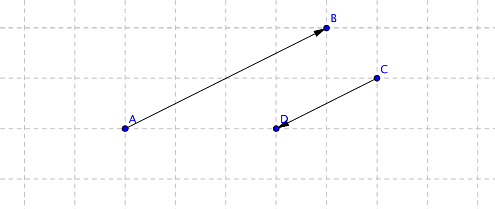
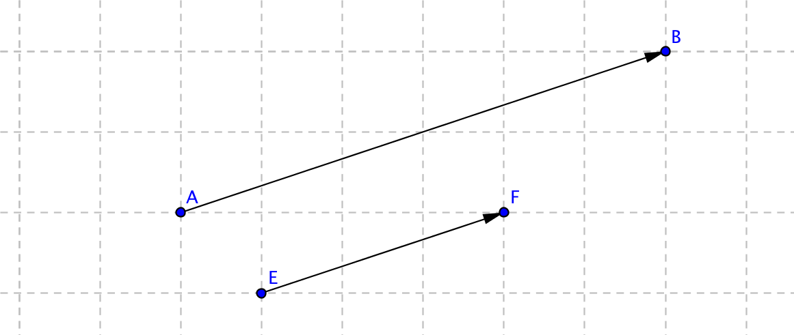
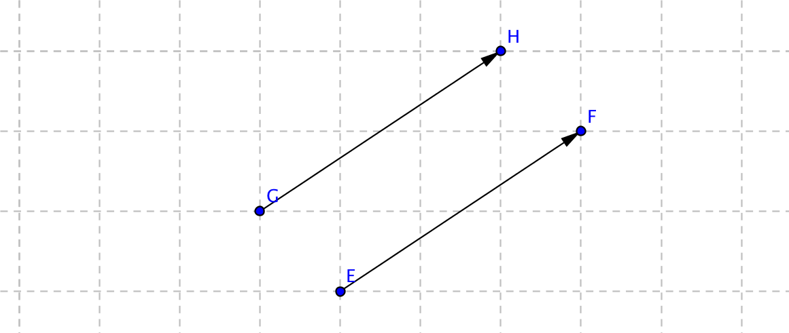
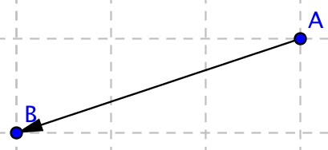
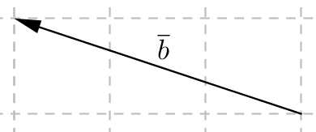
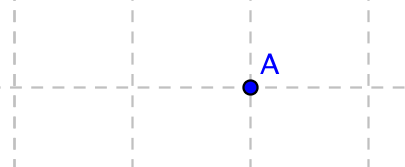
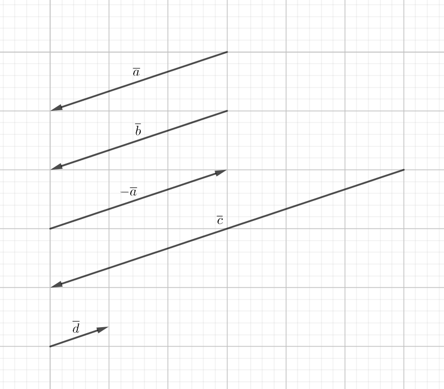
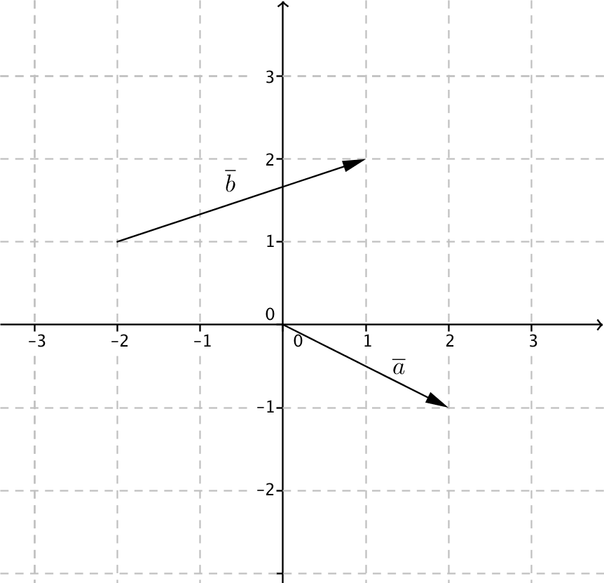
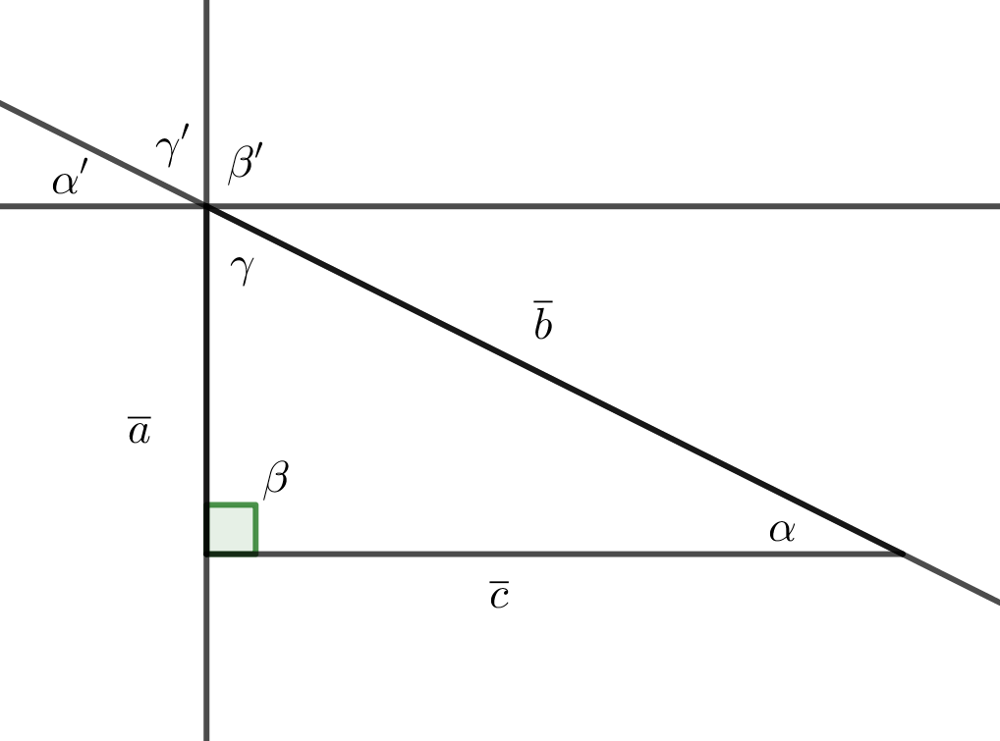

16. Vektorer
En vektor är en matematisk storhet som har både storlek och riktning. Vektorer utnyttjas främst inom fysiken för att beskriva tex kraft, hastighet, acceleration och elektriska- och magnetfält.
Vektorer introduceras för att det gör den matematiska behandlingen lättare av händelser inom fysiken.
Vektorer kan betecknas på flera olika sätt. Vi har
| fet stil | a |
| pilnotation | \( \overrightarrow{AB} \) |
| linjenotation | \( \overline{a} \). |
Det är en liten skillnad på dessa tre och för att inte ha problem i fortsättningen är det bra att genast lära sig skillnaden mellan dessa.
Fet stil används främst inom fysiken och i den angloamerikanska värden.
Pilnotation används för att berätta om en vektor som är mellan två punkter. Vektorn mellan A och B betecknas \( \overrightarrow{AB} \).

Representerar \( \overrightarrow{BA} \) samma som \( \overrightarrow{AB} \)?
Lösning
Nej, eftersom en vektor har storlek och riktning. \( \overrightarrow{AB} \) och \( \overrightarrow{BA} \) har samma storlek, längd, men inte samma riktning. Vi talar om att \( \overrightarrow{AB} \) och \( \overrightarrow{BA} \) är varandras motsatta vektorer. Tänk dessa som motsatta tal. Om vektorn \( \overrightarrow{AB} \) representeras av vektorn \( \overline{a} \), representeras \( \overrightarrow{BA} \) av \( -\overline{a} \).
Mera om dessa kommer i Ett reellt tal gånger en vektor.

Dessa vektorer är olika riktade och det betecknas \( \overrightarrow{AB} \uparrow \downarrow \overrightarrow{CD} \). Du märker att de har samma "lutning".
Vektorerna \( \overrightarrow{AB} \) och \( \overrightarrow{EF} \) är olika långa men de har samma riktning. Vi talar om att de är lika riktade och vi betecknar det som \( \overrightarrow{AB} \uparrow \uparrow \overrightarrow{EF} \).

För att två vektorer skall vara identiska skall de ha samma längd och riktning. Vektorerna \( \overrightarrow{EF} \) och \( \overrightarrow{GH} \) har samma längd och riktning.

När två vektorer kan representeras av en vektor brukar vi beteckna det med en linjenotation. Vi kan alltså skriva \( \overrightarrow{EF}=\overrightarrow{DH}=\overline{a} \) (eller någon annan lämplig bokstav).
En vektor som saknar längd kallar vi för en nollvektor. En nollvektor betecknas \( \overline{0} \). En nollvektor kan vi även skriva som \( \overrightarrow{AA} \), som betyder att den representerar en punkt.
Längden av en vektor betecknas \( \mid \overline{a} \mid \). För nollvektorn betyder det att \( \mid \overline{0} \mid =0 \).
Uppgifter
Kombinera rätt sätt att skriva vektorn med rätt bild.
Välj bland följande beteckningar:
\( \overline{b} \)\( \overrightarrow{AA} \)\( \overrightarrow{DB} \)\( \overline{a} \)\( \overrightarrow{BC} \)\( \overrightarrow{BA} \)\( \overrightarrow{CD} \)\( \overrightarrow{AB} \)Beteckning Bilden  


  
Beteckning Bilden \( \overrightarrow{AB} \) \( \overrightarrow{BA} \) \( \overline{a} \) \( \overrightarrow{CD} \) \( \overrightarrow{DB} \) \( \overline{b} \) \( \overrightarrow{AA} \) \( \overrightarrow{BC} \) - Fyll i de ord som saknas.
En vektor har både längd och [första ordet].
En vektor som saknar längd kallas för [andra ordet].
[Tredje ordet] av vektorn \( \overline{a} \) beteckans \( \mid \overline{a} \mid \) .
Två vektorer som är lika [fjärde ordet] och samma riktade är identiska.
En vektor har både längd och [riktning].
En vektor som saknar längd kallas för [nollvektor eller punkt].
[Längden] av vektorn \( \overline{a} \) betecknas \( \mid \overline{a} \mid \) .
Två vektorer som är lika [långa] och samma riktade är identiska.
Rita av vektorn \( \overline{a} \) på rutpapper.
- Rita vektorn \( \overline{b} \) så att \( \overline{a}=\overline{b} \) .
- Rita vektorn \( -\overline{a} \) .
- Rita vektorn \( \overline{c} \) så att \( \mid \overline{c} \mid = 2\mid \overline{a} \mid \) .
- Rita vektorn \( \overline{d} \) så att \( \overline{a} \uparrow \downarrow \overline{d} \) och \( \mid \overline{a} \mid = 3\mid \overline{d} \mid \) .
Något i stil med

- Låt \( A =(-2,1) \) , \( B=(1,3) \) och \( C=(2,-2) \) . Bestäm \( D \) :s koordinater
- \( \overrightarrow{AB}=\overrightarrow{CD} \)
\( D = (5,0) \)
- \( \overrightarrow{DC}=\overrightarrow{AB} \)
\( D = (-1,-4) \)
- \( \overrightarrow{BD}=-\overrightarrow{AC} \)
\( D = (-3,6) \)
- \( \overrightarrow{DB} = -\overrightarrow{AC} \)
\( D = (5,0) \)
- \( \overrightarrow{AB}=\overrightarrow{CD} \)
Längden för vektorn \( \overline{a} \) är 6 l.e. Rita
- vektorn \( \overline{b} \) som är olika riktad \( \overline{a} \) och \( \mid\overline{b}\mid=4 \) .
- alla lika riktade vektorer till \( \overline{a} \) vars längd är 1.
- alla vekorer som är vinkelräta mot \( \overline{a} \) och vars längd är 3.
Om vi låter \( \overline{a} \) vara vinkelrät så får vi något i stil med

Om vektorerna \( \overline{a} \) , \( \overline{b} \) och \( \overline{c} \) vet vi att \( \overline{a}=-\overline{b} \) och att \( \mid\overline{a}\mid=2\mid \overline{c} \mid \) . På bilden finns vektorn \( \overline{a} \) . Rita vektorerna \( \overline{b} \) och \( \overline{c} \) .

Något i stil med

Betsäm slutkoordinaten då vi startar från punkten \( (2,3) \) och förflyttar oss

- längs med \( \overline{a} \) . Slutpunkten är...
Slutpunkten är \( (4,2) \)
- först längs med \( \overline{a} \) och sedan längs med \( \overline{b} \) .
Vi kommer till \( (7,3) \).
- först längs med \( \overline{b} \) och sedan längs med \( \overline{a} \) .
Slutpunkten är \( (7,3) \).
- längs vektorn - \( \overline{b} \) .
Slutpunkten är \( (-1,2) \).
- först längs med \( -\overline{a} \) och sedan längs med \( -\overline{b} \)
Slutpunkten är\( (-3,3) \).
- längs med \( \overline{a} \) . Slutpunkten är...
- Bestäm från figuren följande vinklar.

- \( \measuredangle (\overline{AB},\overline{AC}) \)
\( \measuredangle (\overline{AB},\overline{AC}) = 60^{\circ} \).
- \( \measuredangle (\overline{AB},\overline{CA}) \)
\( \measuredangle (\overline{AB},\overline{CA}) \) bildar supplementvinkel med \( \measuredangle (\overline{AB},\overline{AC}) \). Alltså \( 180^{\circ} - 60^{\circ} = 120^{\circ} \).
- \( \measuredangle (\overline{BC},\overline{CA}) \)
Vi tänker att vi flyttar \( \overline{CA} \) så att den fortsätter vid \( B \). Vinkeln mellan \( \overline{BA} \) och \( \overline{CA} \) är \( 180^{\circ} - 120^{\circ} = 60^{\circ} \).
Storleken av vinkeln är \( 60^{\circ} + 80^{\circ} = 140^{\circ} \).
- \( \measuredangle (\overline{AB},\overline{AC}) \)
- Visa med den bild: Om en triangel är rätvinklig så kan vi bilda av triangelns sidor vektorerna \( \overline{a} \), \( \overline{b} \) och \( \overline{c} \) så att för vinklarna mellan vektorerna \( \overline{a} \), \( \overline{b} \) och \( \overline{c} \) gäller att \( \measuredangle (\overline{a},\overline{b}) + \measuredangle (\overline{b},\overline{c}) + \measuredangle (\overline{c},\overline{a}) = 180^{\circ} \).
Vi konstruerar följade bild

Vinkeln \( \measuredangle (\overline{a},\overline{c}) = 90^{\circ} \). Då vi bildar en vektor paralell med \( \overline{c} \) och låter \( \overline{a} \) och \( \overline{b} \) fortsätta får vi vinkeln \( \alpha' \) som är lika stor som \( \alpha \). Dessutom uppstår vinkeln \( \beta' \) som är rät och vinkeln \( \gamma \) som är lika stor som \( \gamma' \).

Alltså \( \alpha' + \beta' + \gamma' = 180^{\circ} \). Eftersom \( \alpha' = \alpha \), \( \beta' = \beta \) och \( \gamma' = \gamma \) kan vi dra slutsatsen att \( \alpha' + \beta' + \gamma' = 180^{\circ} \).
Alltså \( \measuredangle (\overline{a},\overline{b}) + \measuredangle (\overline{b},\overline{c}) + \measuredangle (\overline{c},\overline{a}) = 180^{\circ} \).
- Fundera på följande tillsammans med en kurskamrat.
- Vad är det för skillnad med att kunna utantill en matematisk formel och att förstå den?
- När klarar du dig bäst i matematikprov? Då du lärt dig saker utantill eller då du har förstått saker? Förklara.
- Varför försöker studerande att lära sig matematiska formler utantill i stället för att lära sig förstå dem?
Källa: Filosofoidaan matematiikasta ja luonnontieteistä; Daniel, Lafourtune, Pallascio, Sykes